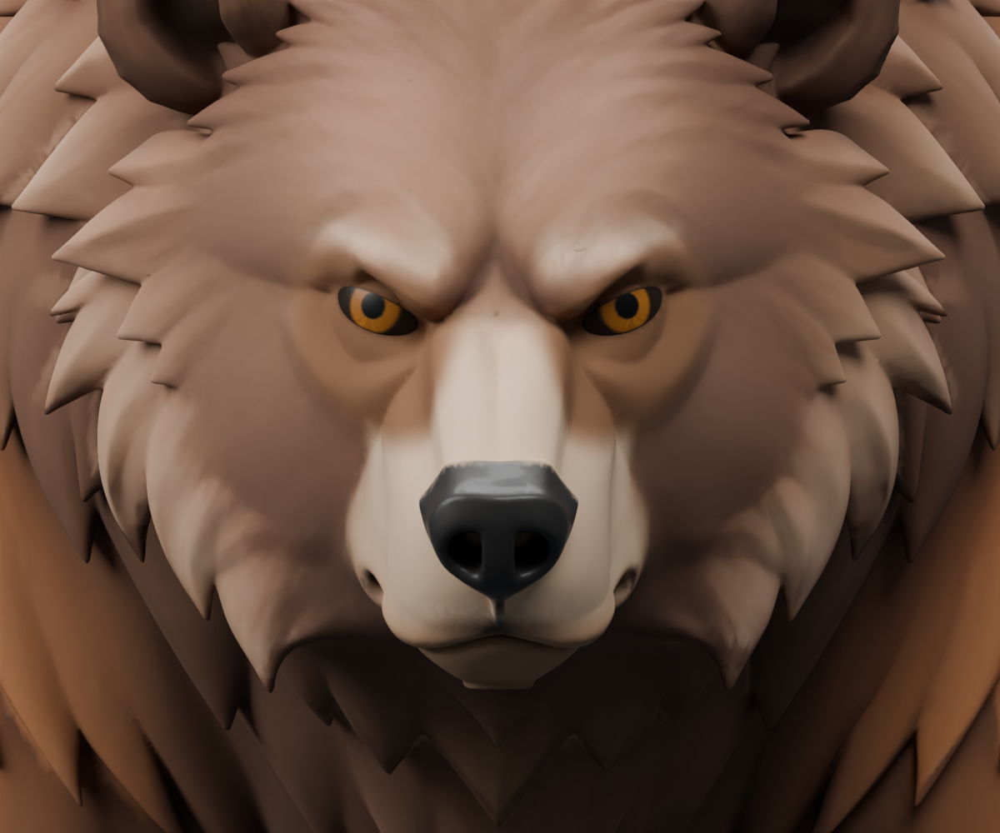
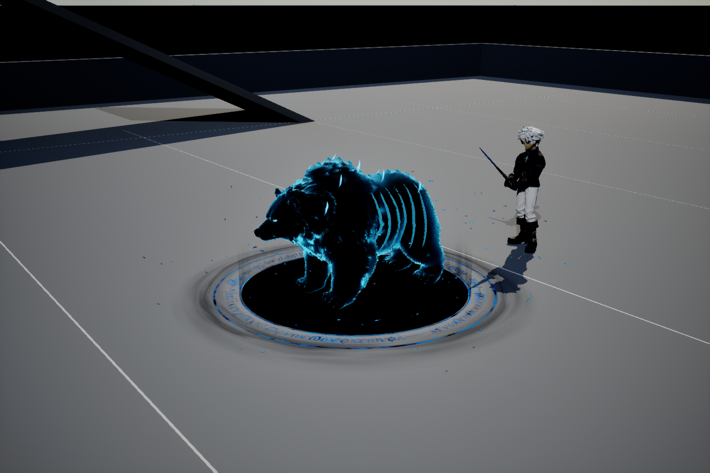
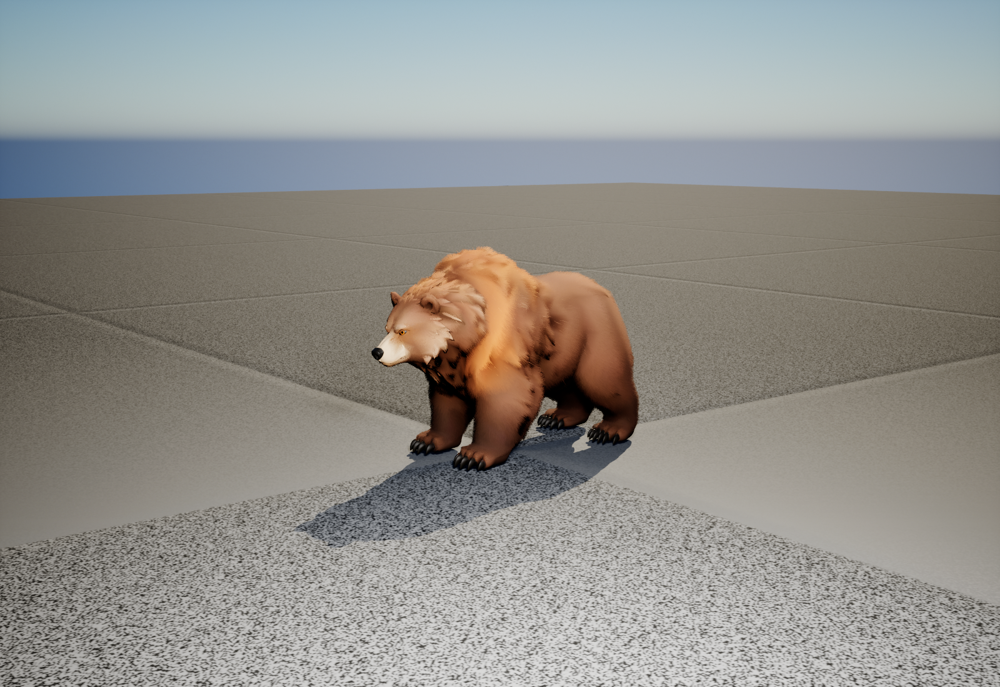
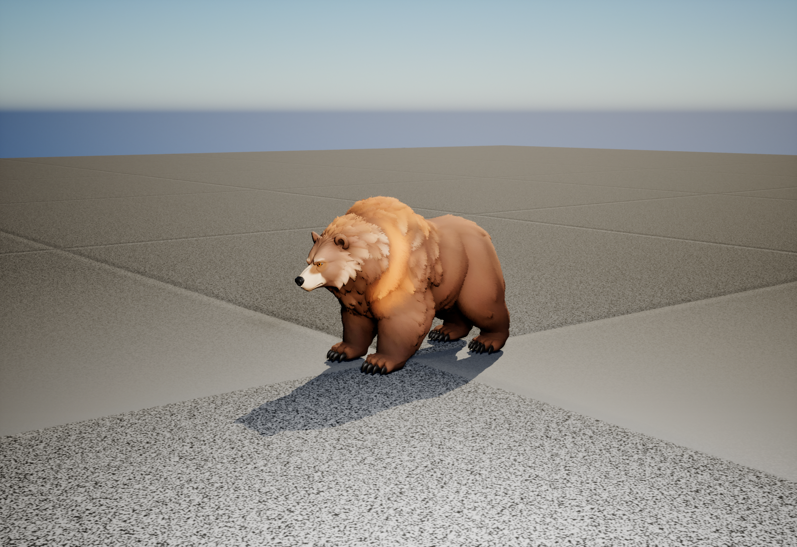
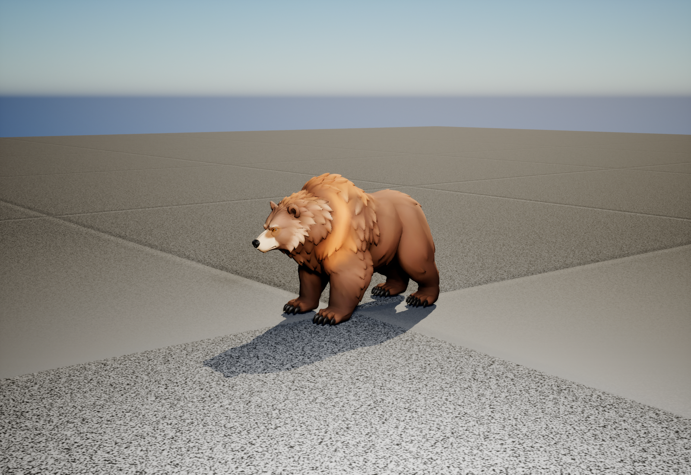
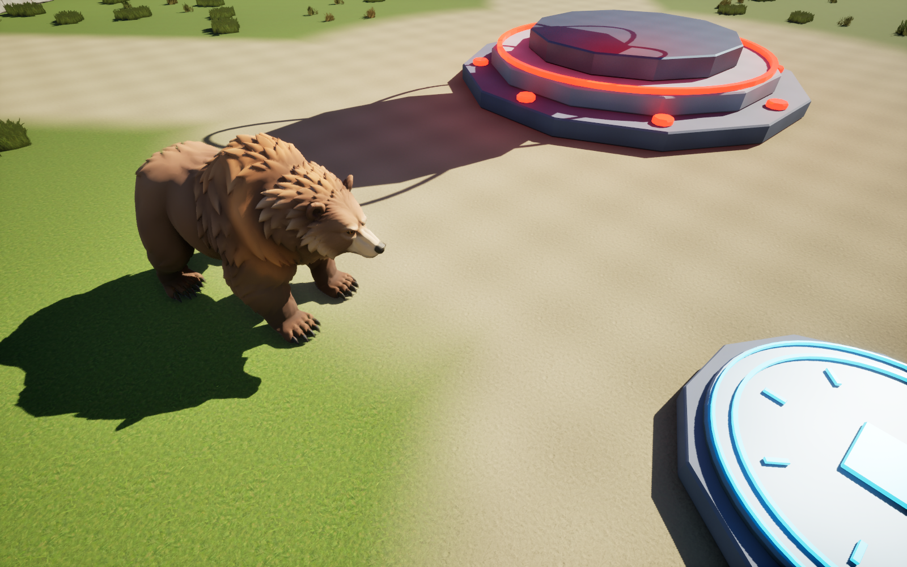
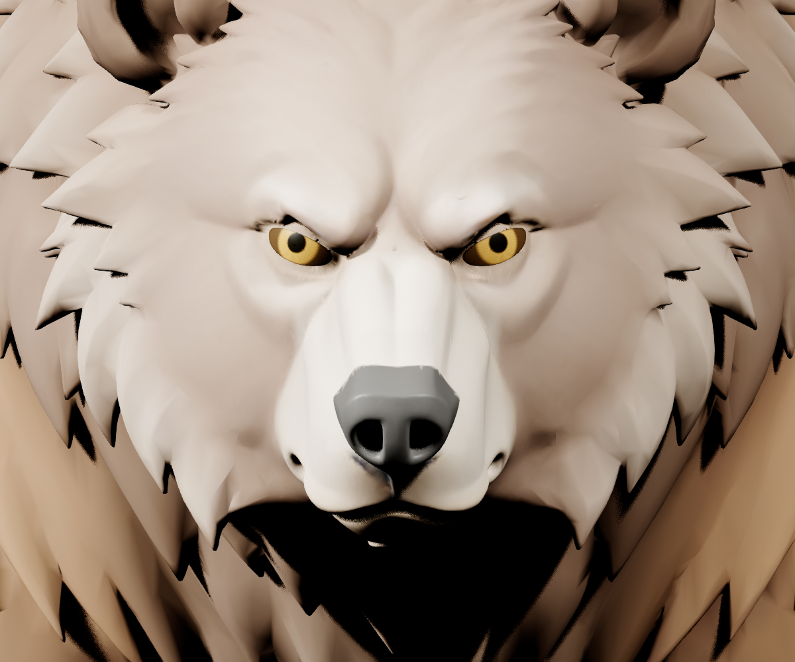
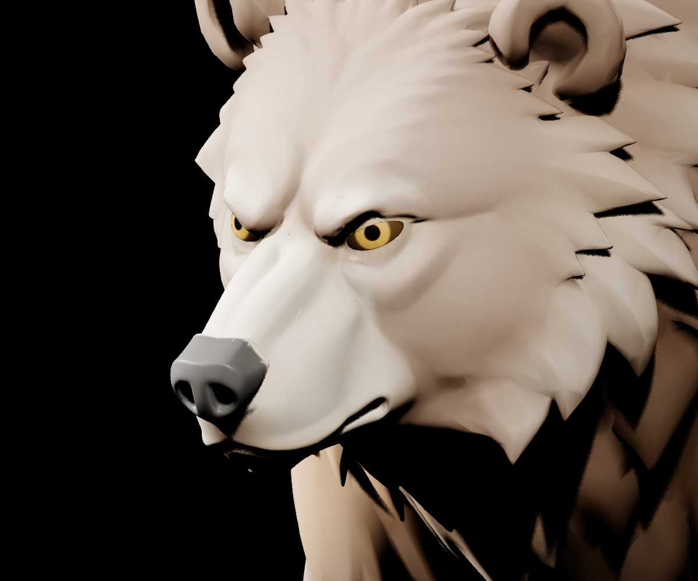

Ours · modèle et apparence
Dans cette page
État courant · V27
Version V27 · 23 octobre 2026. Les précisions ci-dessous constituent l’état courant ; les campagnes et versions précédentes restent consultables dans le volet historique.
L’ours conserve sa posture debout à proximité de la cible, avec marche et rotation entre ses attaques. L’aigle se repose trois secondes et utilise les raccords de pose entre sol et vol, y compris après recrutement. Son réglage de base est désormais de 150 PV et 20 dégâts de piqué dans les deux modes. La surface sombre du portail possède son effet de fissuration et une courte fin de disparition. Les noms, portraits et styles d’interface approuvés sont partagés.
Maintenir Pivoter entraîne progressivement la plateforme et le mob ensemble, autour du centre des appuis ; le décor et les lumières restent fixes. Maintenir Zoom + ou Zoom − zoome continuellement ; les boutons sont grisés aux limites. Le cadrage coordonne la crypte et le sujet, sans modifier la taille de l’allié dans le monde. La seule nouvelle chaussure plate est affichée devant Déplacement. Portraits, cadres dorés, badges KO rouges, dégâts compacts, fissures cyan et ambiance de crypte sont conservés.
Organisation, captures et validation V27 · Gestion des ombres
Guide détaillé et historique antérieur à V27
BESTIAIRE · MODÈLE ANIMÉ · PELAGE V6
Ours grizzly : modèle et retouches
Sources du corps animé, pelage, corrections du visage et des griffes, avec archives des retouches statiques.

21 octobre — Le portail sombre se fissure et se sépare · V20
La surface noire/bleu nuit reste la même depuis l’ouverture. Des fissures lumineuses la traversent, puis ses 20 morceaux sombres s’écartent et se dissipent en 0,7 seconde. Les petits éclats cyan accompagnent désormais la fracture du disque lui-même. Le véritable allié est libéré au moment habituel, vers 6,2 secondes.
Un seul maillage de 594 triangles réunit les vingt cellules et leurs fines tranches. Leur mouvement utilise l’horloge du matériau sur le GPU, sans Tick de déplacement sur le processeur, simulation physique, collision, ombre ni ray tracing. La même surface est présente dans les trois rituels dès leur début ; seul leur émetteur sombre Portal001 est désactivé sur chaque composant. Le système Niagara et son matériau d’origine restent conservés, ainsi que la préparation au chargement.
75 contrôles réussis sur 75 : trois vraies morts et réanimations solo, sans résultat forcé, sans pause et sans capture pendant ce banc logique. Toutes les images observées de fermeture contrôlent les proxies cachés, le véritable allié visible, la continuité de surface et d’horloge, l’arrêt du Tick et la suppression de l’effet. Les 12 PNG natifs de 1 280 × 688 pixels viennent d’un banc distinct, figé brièvement pour photographier les quatre étapes. Ils ont tous été inspectés.
Solo seulement. Le rituel réseau utilise un effet distinct, inchangé ici. Ce contrôle ne mesure pas les FPS globaux et ne constitue pas une validation multijoueur. Les coûts, probabilités et limites d’alliés sont conservés ; aucune source C++ ni carte n’a été modifiée pour cette fermeture.
Voir les trois séquences actuelles · Preuve logique sans pause · Captures séparées · Copies récupérables avant modification.
Historique remplacé : la V19 ajoutait les fissures et les 32 petits éclats cyan, mais retirait le disque sombre au départ de la fermeture. La V20 corrige précisément cette surface. Les images V19 et ses 60 contrôles datés sont conservés comme historique.
Ours allié : Ombre céleste
Le recrutement d’un ours mort produit désormais un ours allié, avec le style du loup Ombre céleste : corps bleu nuit, contour cyan, yeux lumineux, côtes et ornements spectraux. Son pelage V6 suit le même squelette que le corps. Ses griffes, sa taille et ses animations d’ours sont conservées.

La sélection du cadavre choisit la bonne espèce. Le rituel de l’ours possède son propre corps, son pelage et ses ornements. Rappel T et déploiement Y préservent santé, niveau, expérience et place dans le groupe ; un groupe mixte loup–ours a été testé. Le recrutement coûte toujours 25 points de mana.
Sources et validation
Blueprint /Game/ElemntsForGame/Allies/Ours/BP_OursAllie_OmbreCeleste, rituel BP_InvocationOurs. Les ornements ajoutent 3 816 triangles, suivent le corps, et restent sans collision ni ombre dédiée. Source : Art/Combat_Creatures_V2/Ours/Necromancie/Ours_OmbreCeleste.blend. Ils utilisent les poids corrigés du corps actuel.
167 contrôles réussis : mort, recrutement effectif, coût, espèce, propriétaire, rituel, pelage, rappel et redéploiement, avec régression du recrutement du loup classique. Le test force uniquement sa probabilité de réussite et ses ressources dans la scène temporaire. Cette validation concerne le solo ; elle ne porte pas ces fonctions dans le réseau.
Modèle actuel et pelage V6 — 19 octobre 2026
Le duvet de l’ours couvre mieux les sourcils et le contour des yeux. La zone laissée libre autour des paupières est plus précise, avec un maillage localement affiné pour éviter de grandes plaques sans poils. Les globes, les paupières mobiles, la truffe et les griffes restent dégagés ; le clignement Blink est conservé.
Le redressement de l’ours a révélé que des sommets du ventre suivaient les avant-bras. Leurs poids sont corrigés pour que le ventre suive le torse, avec un raccord progressif vers les flancs. Le pelage reprend les mêmes poids pour suivre le corps pendant ses mouvements. La forme du corps, les retouches des griffes, les quatre matières et le squelette de 24 os sont conservés.
État de cette passe : corps et pelage V6 réimportés ; combat, dégâts, mort et recrutement vérifiés dans le solo le 19 octobre. Voir les règles de combat et les 31 contrôles fonctionnels. Les mesures V5 historiques ci-dessous ne constituent pas un benchmark de cette nouvelle version.
Trois niveaux de détail
| Affichage | Couches de duvet | Brins courbés | Triangles du pelage ajouté |
|---|---|---|---|
| Proche — LOD 0 | 12 | 9 000 | 126 228 |
| Intermédiaire — LOD 1 | 8 | 3 600 | 46 040 |
| Éloigné — LOD 2 | 4 | 1 200 | 10 960 |
Ces nombres concernent uniquement le pelage ajouté, pas le corps ni la scène complète. Le matériau fin de la V5 est conservé. La couche de duvet reste sans collision et exclue du ray tracing ; aucune nouvelle mesure de performances de la V6 n’est revendiquée.
Sources exactes et précautions pour une prochaine retouche
La source du corps animé est Art/Combat_Creatures_V2/Ours/Ours_Poids_Combat.blend, avec l’export SK_Ours_Poids_Combat.fbx. Elle dérive de Art/Pelage_Souple_V3/BearCleanup/Ours_Finition_Pattes.blend ; cette dernière conserve les anciennes corrections des griffes, mais pas les nouveaux poids du torse.
Le pelage provient de Art/Combat_Creatures_V2/Ours/PelageV6/Pelage_Ours.blend. Les trois exports sont SK_Pelage_Ours.fbx, SK_Pelage_Ours_LOD1.fbx et SK_Pelage_Ours_LOD2.fbx, dans ce même dossier. Le générateur Saved/CodexTools/CreatureCombatV2/BearArt/FurV6/build.py utilise le corps corrigé ci-dessus : régénérer le duvet après toute nouvelle retouche des poids.
Assets : corps /Game/ElemntsForGame/Mobs/Ours/GrizzlyV2/SkeletalMesh/SK_Ours_Grizzly_V2 ; pelage /Game/ElemntsForGame/Mobs/PelageV6/SK_Pelage_Ours, sur le composant PelageVolume de BP_IA_Ours ; matériau conservé /Game/ElemntsForGame/Mobs/PelageV5/M_Pelage_Ours. Les scripts BearArt/install_body.py puis BearArt/FurV6/install.py sauvegardent les assets concernés avant import. Conserver le squelette existant, Blink, les matières, les normales importées, Remove Degenerates = false et les UV pleine précision des trois LOD du duvet. Les deux UV RootXY et RootZLayer transportent les coordonnées utilisées par son matériau.
La correction porte sur 20 580 sommets pondérés, sans déplacer de sommet ni modifier la topologie. Les contrôles Blender échantillonnés de repos et de charge confirment que les pieds et les zones non retouchées restent identiques ; le ventre se déforme différemment pour suivre le torse. La V6 concerne ici l’ours ordinaire ; elle ne remplace pas les sources des loups.
Rapports : 10 contrôles des poids et de conservation · 21 contrôles des exports et poses · 5 contrôles du réimport du corps · 51 contrôles de génération du duvet · 45 contrôles de ses exports FBX · 15 contrôles d’installation du duvet. Ce sont des vérifications techniques ; elles ne remplacent pas les essais de combat ni l’évaluation visuelle dans le jeu.
Base V5 — pelage et mesures du 19 octobre 2026
Les loups retrouvent un pelage plus court, et un duvet fin recouvre la tête de l’ours. La géométrie est allégée en conservant les volumes du corps, les griffes et les animations.
La longueur du sous-poil est ramenée à 48 % de la V4 : environ 0,86 à 1,44 cm sur le corps et jusqu’à 1,92 cm autour du cou, avant déformation. Les mèches restent orientées ensemble et suivent les mouvements du squelette.
Un pelage de 0,75 à 1,2 cm couvre la tête, avec un duvet plus court sur les oreilles. Les yeux, le museau et les griffes restent dégagés. Un motif plus fin adoucit le front et le raccord au pelage du corps.
Comparer V4 et V5 à distance de jeu, avec détails de la tête et des griffes.

La référence de renardeau guide le duvet court, doux et continu. Le but est de retrouver ce caractère sur l’ours et les loups ; les comparaisons montrent leurs modèles animés dans Unreal et leur éclairage de jeu.
Fluidité et message jaune
Le budget de géométrie ray tracing est respecté après correction : demande maximale de 203,68 MiB dans la comparaison contrôlée, puis 216,96 MiB lors du lancement normal avec menu puis solo, pour un budget conservé de 400 MiB. La V4 atteignait 473,79 MiB dans la comparaison. Une observation directe du menu NEXUS dans l’éditeur utilisateur confirme également l’absence de message jaune à ce moment. Les compteurs moteur sont archivés ; cette observation visuelle ne dispose pas d’une capture durable.
Dans une scène contrôlée affichant dix animaux animés, le temps GPU médian moyen des deux répétitions passe de 6.33 ms avec V4 à 4.05 ms avec V5, soit environ 36 % de temps GPU en moins. La cadence observée reste proche de 8,33 ms par image ; aucun gain de FPS en jeu normal n’est revendiqué.
Diagnostic, protocole et preuves. Les mesures comparatives sont distinctes des comptages de géométrie.
Sources, conservation et contrôles
127 contrôles runtime, 18 d’assets et 38 d’activation. 99 contrôles de génération et 90 contrôles des exports FBX. Vingt captures, dix comparaisons. Sources : Art/Pelage_Optimise_V5 ; scripts et sauvegardes : Saved/CodexTools/FurOptimiseeV5.
La V4 est conservée dans Art/Pelage_Duvet_V4. Les retouches des griffes, les alertes et la caméra sont conservées. Cette passe porte sur les quatre Blueprints ordinaires du solo ; le loup réseau reste en pelage de surface V1.
Runtime · Activation · Captures.
Historique : duvet V4, remplacé par V5
Florian a demandé une nouvelle passe : poils du loup trop longs, tête de l’ours insuffisamment couverte et coût de rendu à réduire. La V5 a remplacé cette étape pour les loups ; l’ours utilise ensuite la V6 décrite en tête de page. La V4 reste récupérable avec ses sources et captures.
Après rejet de la V3 jugée trop discrète, la nouvelle passe reprend la présence du pelage à distance de jeu et son volume. La référence fournie par Florian reste la fourrure douce et stylisée d’Aniimo. Le critère principal est la lecture du duvet sur la silhouette et le corps sans zoomer, plutôt qu’un nombre de brins.
Comparer V3 et V4, avec rappel de V2 à distance de jeu.

Lors de cette étape, la V4 équipait les quatre Blueprints ordinaires du solo : ours et loups blanc, gris, noir. Le loup natif multijoueur garde le pelage de surface V1 ; les formes nécromantiques spéciales sont hors de ce lot. Les corrections des pattes et des griffes de l’ours, les alertes « ! » et la caméra de la passe précédente sont conservées.
Sur les loups, le raccord du cou et de la queue utilise une direction de fibres lissée pour réduire les cassures anguleuses ; le masque du sous-poil laisse mieux apparaître les mèches. Cette régularisation concerne le pelage ajouté, avec protection des oreilles, du visage et des pattes. Le corps original reste conservé.
Comparaison et vérifications
131 contrôles Unreal réussis. Vingt-quatre captures pour huit vues en V2, V3 et V4, dont huit comparaisons V3/V4 aux mêmes poses, caméras et éclairages, sur le même corps corrigé de l’ours. Ces résultats techniques ne remplacent pas le jugement visuel de Florian et ne constituent ni un benchmark ni un test réseau.
Contrôles V4 · Comparaisons · Intégration · Géométrie ours · Géométrie loups.
Sources finales : ours via build.py -- Ours ; loups via build_loup_smooth.py puis adopt_smooth.py. La variante lissée a été adoptée dans les fichiers racine de Art/Pelage_Duvet_V4. Le prototype initial du loup reste une archive. Sources : Art/Pelage_Duvet_V4 ; scripts et sauvegardes : Saved/CodexTools/FurAniimoV4. Référence Aniimo, présentation officielle : inspiration artistique uniquement, sans supposer sa technique interne.
101 contrôles sur quatre poses de charge de l’ours et quatre poses de galop du loup blanc, à caméra fixe. Les captures vérifient notamment le suivi du squelette par le pelage et ses limites d’affichage. Il s’agit de poses échantillonnées, pas d’une mesure de performances ou d’une vidéo du combat complet.
Réglages finaux : le gris conserve MSS_NONE pour éviter le blanchiment, le blanc utilise seul MSS_TWO_SIDED_WRAP. Après adoption des sources, smooth_final.py réimporte explicitement le loup. L’activation passe par activate.py, puis refresh_instances.py pour reconstruire les instances placées à partir de la carte propre. Le script bloque le rechargement si une carte contient des modifications non enregistrées. Activation vérifiée : quatre Blueprints, dix animaux placés.
Historique : V3 écartée, duvet trop discret
Florian a écarté ce rendu : les poils restaient trop discrets à distance de jeu. Les essais V3 et V4 sont historiques ; la V5 reste la base des matériaux et du pelage des loups ; l’ours utilise la V6 décrite en tête de page. Les corrections des griffes de l’ours restent conservées.
Le retour de Florian sur l’aspect « poils de brosse » de la V2 conduit à une nouvelle passe : sous-poil plus continu, brins courbés et couchés, variations de longueur et raccord plus doux avec les mèches sculptées. L’objectif visuel reste une fourrure stylisée agréable à distance de jeu, inspirée de sa capture Aniimo.
Comparer la V2 et la V3 à distance de jeu.

Intégration sur l’ours et les trois Blueprints ordinaires du solo (loups blanc, gris et noir). Le loup natif multijoueur conserve la V1 de surface. Les variantes nécromantiques spéciales restent hors de cette passe.
Finition des pattes : suppression des taches brunes sur les griffes, contours courbes adoucis et correction des affectations de matière. Les positions, la topologie, les UV, les poids, les 24 os, les actions et Blink sont conservés ; aucune reconstruction anatomique. La source corrigée est Ours_Finition_Pattes.blend, dérivée de l’idle V2 actuel.
Construction, conservation et validation
Le composant PelageVolume combine des couches masquées pour le sous-poil et des brins géométriques courbés, attachés au squelette du corps. Trois niveaux de détail : 16 / 8 / 4 couches ; ours 24 000 / 8 000 / 3 000 brins ; loups 15 000 / 5 000 / 1 875. Pas de simulation physique indépendante.
79 contrôles Unreal, 19 contrôles de conservation de la source ours et 5 contrôles du réimport réussis. Huit paires d’images à pose, caméra et éclairage identiques : « Avant » est la V2 en volume, « Après » la V3, sur le corps déjà corrigé. Les griffes disposent d’une comparaison Blender séparée. Ces contrôles ne constituent ni un benchmark ni un test multijoueur.
Contrôles Unreal · Images · Source ours · Réimport ours · Intégration · Géométrie ours · Géométrie loups.
Historique : premiers poils en volume V2
Suite au retour de Florian, le détail de texture V1 est complété par de vrais brins géométriques, courts et effilés. La direction visuelle est un pelage doux et dense inspiré de sa capture d’Aniimo ; la technique utilisée ici ne prétend pas reproduire celle du jeu de référence.
Le composant PelageVolume suit le squelette du corps par Leader Pose. Les maillages de corps, morphs du visage, animations et collisions restent conservés. Les yeux, museaux et griffes sont exclus du pelage ajouté. L’ours et les trois loups ordinaires sont concernés ; les formes nécromantiques spéciales ne changent pas.
Densité proche : 180 000 brins pour l’ours, 120 000 pour le loup. Deux niveaux éloignés utilisent 25 % puis 6,25 % de cette géométrie. Les poils n’ont pas de simulation physique indépendante. Les vérifications de pose et les captures ne remplacent pas un benchmark avec plusieurs créatures.
Voir la fourrure à distance normale · Vérifications dans Unreal · Géométrie · Intégration · Densité à distance.
La fourrure V2 équipait les quatre Blueprints ordinaires du solo à cette étape. Elle est conservée comme archive ; la V5 reste utilisée pour les loups ; l’ours utilise la V6 décrite en tête de page. Le loup natif multijoueur garde le pelage de surface V1.
Pelage de surface V1
Ajout du 18 octobre 2026 : un détail de fibres irrégulières module la couleur, la rugosité et le relief apparent du pelage. Les coordonnées suivent la peau animée. Le détail trop fin est atténué selon sa taille à l’écran.
L’ours reçoit un matériau de pelage distinct avec une couche de duvet ; les yeux, la truffe et les griffes conservent leurs matériaux. Les loups blanc, gris et noir reçoivent le même principe, avec un grain plus fin et leur mouvement de mèches existant. Les formes nécromantiques spéciales ne sont pas modifiées par ce lot.
Il s’agit d’un effet de surface : le maillage, les squelettes, les morphs et la silhouette sculptée sont conservés. Les paramètres Pelage_Densite, Pelage_Contraste et Pelage_Relief permettent l’ajustement ; Pelage_Duvet règle le duvet de l’ours.
Comparer avant / après · Vérifications · Source de l’effet · Matériaux actifs et versions précédentes.
Charge V1 — référence conservée
Voir la charge en jeu. L’ours baisse les épaules pendant 0,65 s, engage un galop à 650 cm/s maximum puis récupère pendant 0,75 s. La direction est annoncée et reste engagée : une esquive latérale permet d’éviter le contact. Temps minimal entre charges : 6 s après la fin.
Le contact inflige 35 dégâts une seule fois. Si les dégâts sont acceptés, le joueur reçoit une projection de 950 cm/s horizontalement et 420 cm/s vers le haut. Il s’agit d’une projection physique utilisant les états de chute existants de l’avatar ; aucune nouvelle animation de chute au sol ou de relèvement n’a été ajoutée au joueur.
Une spirale rouge pourpre accompagne la préparation et la course. Son matériau est propre à l’ours, sans collision, et l’effet disparaît au freinage. Un obstacle ou une rupture importante du terrain interrompt la charge.
Sources : Art/Ours/Ours_Charge_V1/Ours_Charge.blend. Assets : Animations/ChargeV1/A_Ours_Anticipation, A_Ours_Charge, A_Ours_Freinage ; matériau Effets/ChargeV1/MI_Ours_Charge. Le mesh V2, les paupières et les animations ordinaires restent utilisés.
Résultats de la campagne courante : 43 contrôles ours/aigle.
État actuel
Le grizzly animé de la base solo conserve son squelette, le repos avec clignement V2, la marche, la course et son IA de patrouille/poursuite. Le corps utilise les poids de la passe Combat V2 et le duvet V6 décrits en tête de page. L’acteur Ours_Grizzly_Anime remplace l’exemplaire statique. Les retouches du visage et les matériaux sont conservés.
Guide actuel : squelette, animations, IA et essais → · Voir les animations
Cette page conserve le détail des corrections et l’historique des versions statiques. Les placements et limitations des passages V2/V3 ci-dessous décrivent cette étape antérieure. Le corps courant et le pelage V6 sont décrits en tête de page. Les règles de combat et leur validation sont suivies dans le guide des animations et de l’IA.
V3 : trait blanc dans la pupille et raccord des paupières
Le trait clair signalé dans la pupille n’était pas un reflet peint. Le réglage Remove Degenerates supprimait 192 triangles valides des deux yeux, créant deux petites ouvertures centrales. Le diagnostic a confirmé que le trait restait visible avec une rugosité de 1 et une réflectance nulle. La géométrie rendue dans Unreal présentait 192 arêtes ouvertes supplémentaires au centre des yeux.
La suppression automatique a été désactivée pour cet asset, dans les paramètres d’import et de construction. Lors d’un réimport, Unreal peut conserver les anciens réglages malgré ceux de la tâche d’import : le script V3 met donc explicitement à jour l’asset existant avant le réimport. Le FBX et Unreal contiennent désormais exactement 337 068 triangles, sans perte. Les deux yeux comptent 7 488 triangles, aucune ouverture interne, aucune face d’aire nulle et aucune arête non-manifold. Leurs 192 arêtes extérieures correspondent aux contours normaux des deux calottes.
Le halo clair autour des paupières a été remplacé par un raccord brun progressif vers le pelage. La géométrie Blender reste celle de la V2. Les corrections précédentes du museau sont conservées. La brillance des yeux est revenue aux valeurs d’origine : rugosité 0,40, spéculaire 0,24 ; les essais mats n’ont pas été retenus.
Comparaison V3 dans Unreal · Contrôle du maillage rendu · Vérification dans la base
Sources de cette étape statique : Art/Ours/Ours_Grizzly_Retouche_V3. Reproduction : Saved/CodexTools/OursV3/correct_periocular.py, puis export_colors.py, import_live.py, verify_live.py. Ne pas utiliser le script d’import V1 ou V2 pour ce fichier : ils ne protègent pas les minuscules triangles des pupilles. Une future retopologie devra aussi conserver cette continuité.
Historique : retouches V2 et placement statique
La bavure sombre sous la truffe a été repeinte dans la couleur du museau. Le petit sillon central est conservé. La lecture des couleurs dans le matériau Unreal a également été corrigée : les couleurs sRGB du FBX sont décodées en valeurs linéaires avant l’albédo, ce qui évite un pelage artificiellement éclairci. Le halo irrégulier autour des yeux a été nettoyé et les petits reliefs des paupières ont été adoucis localement. Les yeux restent deux surfaces séparées ; le modèle n’est pas encore préparé pour cligner des yeux.
Dans /Game/Level/L_Base_Nexus, l’acteur Ours_Grizzly_Apercu_Modele est rangé dans Base/Apercus_Modeles. Position : X 440, Y −650, Z 0,7 cm ; échelle 2,3 ; hauteur environ 159 cm. La plaque de réapparition est à X 0, Y −800 : l’ours est à environ 4,65 m de son centre. Il regarde vers le départ du joueur.
Le terrain a été vérifié par cinq traces verticales autour des appuis (sol plat, Z = 0). L’exemplaire est sans collision pour ne pas bloquer le joueur ou les chemins des loups. Il ne prend pas de dégâts, ne se recrute pas et n’a pas d’IA. La map a été sauvegardée ; les sessions de jeu déjà ouvertes doivent être relancées pour voir un acteur ajouté à l’éditeur.

Archives de la passe V2 : Art/Ours/Ours_Grizzly_Retouche_V2. Scripts : Saved/CodexTools/OursV2 (retouch → export_all → import_live). place_solo.py ajoute ou replace l’unique exemplaire ; il sauvegarde la map avant modification. Les aperçus V1 restent archivés.
Corrections du modèle
| Zone | Problème observé | Traitement |
|---|---|---|
| Yeux | Surface bosselée, jaune débordant sur la paupière inférieure, reflets peints dans la pupille. | Retrait des anciennes surfaces oculaires, deux petites calottes lisses, iris ambrés et pupilles séparés par la couleur ; raccord aux ouvertures des paupières. |
| Truffe | Large tache beige sur la partie supérieure et débordement sombre sur le museau. | Zone sombre redessinée, bord resserré et surface légèrement plus brillante que le pelage. |
| Bouche et menton | Taches sombres irrégulières autour des lèvres. | Nettoyage local en conservant le trait de bouche et le volume d’origine. |
| Pelage | Petites cassures triangulaires et coutures accentuées par la carte de normales générée. | Lissage faible et local des couleurs, retrait de cette carte de normales et conservation du relief sculpté. |
| Griffes | Couleurs et brillance irrégulières. | Teinte de kératine sombre, matériau distinct et géométrie protégée pendant l’allègement. |
Le corps, la silhouette et les grandes mèches restent ceux du téléchargement. Les modifications de géométrie se concentrent sur les yeux et leur raccord. Les détails restent stylisés : aucune grande sclère blanche ni ajout d’équipement.
Sources à utiliser et archives
Pour l’ours animé courant, partir de Art/Combat_Creatures_V2/Ours/Ours_Poids_Combat.blend et du dossier PelageV6 associé. Les sources exactes et règles de conservation sont détaillées en tête de page.
Archives du modèle statique V3 et sources originales
| Fichier | Rôle |
|---|---|
| Ours_Grizzly_Corrige.blend | Maître éditable, avec géométrie détaillée, yeux séparés, matériaux et studio de rendu. |
| Ours_Grizzly_Export_Unreal.blend | Copie allégée et triangulée, 337 068 triangles. Point de départ de l’export statique de cette étape historique. |
| SM_Ours_Grizzly_Corrige.fbx | Export pour Unreal, couleurs incluses. |
| Ours_Grizzly_Corrige.glb | Échange 3D avec les couleurs corrigées. |
| Original_Tencent.glb / Ours_Source.blend | Sources intactes. Ne pas les confondre avec les versions corrigées. |
Les fichiers de retouche statique de cette étape se trouvent dans Art/Ours/Ours_Grizzly_Retouche_V3 ; les sources originales sont conservées dans V1. Les images avant/après et les rapports de contrôle sont conservés à côté. Les fichiers .blend1 sont des sauvegardes automatiques, pas la version à importer.
Assets de retouche statiques dans Unreal
Pour le voir directement en jeu : lancer Solo, puis regarder à côté de la plaque de réapparition. La capture ci-dessus utilise une caméra de contrôle avec exposition fixe ; la caméra du joueur conserve ses réglages habituels.
Dans le navigateur de contenu, ouvrir /Game/ElemntsForGame/Mobs/Ours/GrizzlyV2.
Meshes/SM_Ours_Grizzly_Corrige: maillage statique.Materials/M_Ours_Surface: matériau parent Substrate : couleurs des sommets vers Diffuse Albedo, puis Front Material. Tous les raccords sont vérifiés à la création.Materials/MI_Ours_Pelage,MI_Ours_Truffe,MI_Ours_Griffes,MI_Ours_Iris_Propres: quatre instances avec une rugosité adaptée.Validation/L_Validation_Ours: scène dédiée avec sol et éclairage.
Le modèle mesure environ 69,2 cm de haut à l’échelle native du fichier. La scène d’inspection l’affiche à ×2,3, soit environ 159 cm. Cette taille est provisoire : la taille de gameplay sera fixée avant le rig et les collisions. Le sol de la scène porte le joueur ; la collision de l’ours n’est pas configurée à ce stade.
L’ancien asset /Game/ElemntsForGame/Mobs/Ours/ours reste disponible. La base solo contient l’exemplaire de validation. Le hub et les quatre forts ne reçoivent pas ce nouveau mob à ce stade.
Conserver les bonnes couleurs lors d’une retouche
Les étapes ci-dessous décrivent le modèle statique historique. Pour le corps animé courant, conserver les couleurs corrigées et utiliser les scripts de la passe Combat V2 / pelage V6, qui protègent le squelette et le clignement.
- Ouvrir le maître corrigé, puis enregistrer une nouvelle version avant de peindre.
- Dans les attributs de couleur du maillage, conserver
CouleursCorrigees. Les shaders lisent cet attribut, et non l’ancienne texture Tencent. - Peindre localement les zones voulues. Pour le regard, travailler sur
Ours_Oeil_GetOurs_Oeil_Dplutôt que sur le pelage autour des yeux. - Pour l’export actuel, convertir l’attribut en couleur par coin de face, format
BYTE_COLOR, le définir actif et l’exporter en sRGB. Le maître utilise des couleurs linéaires flottantes ; éviter une double conversion gamma. - À l’import FBX dans Unreal, sélectionner Vertex Color Import Option = Replace. Désactiver Remove Degenerates dans l’import et dans les Build Settings du LOD 0, puis vérifier que le réimport conserve ce réglage. Importer les normales et tangentes, combiner les maillages pour cette version statique et ne pas recréer les anciens matériaux de texture.
- Réaffecter les quatre instances aux slots correspondants, puis comparer les yeux, la truffe et le museau dans la scène dédiée.
Le projet utilise Substrate. Attention dans les scripts Python : la première sortie du nœud Vertex Color est sans nom ; passer le nom de sortie RGB échoue. Vérifier le résultat de chaque connexion. Le parent utilise Substrate Slab BSDF ; la réflectance F0 vaut Speculaire × 0,08. Les matériaux sont opaques, non métalliques. Rugosités actuelles : pelage 0,85 ; truffe 0,45 ; griffes 0,50 ; iris 0,40. Le léger clearcoat du studio Blender n’est pas reproduit dans le parent Unreal actuel ; l’éclairage et le rendu de brillance peuvent donc différer entre les deux logiciels.
Contrôles et limites
| Contrôle | Résultat |
|---|---|
| Intégrité du téléchargement | Copie GLB identique à la source téléchargée, empreinte SHA-256 vérifiée. |
| Réduction | 1 500 000 → 337 068 triangles, soit environ 77,5 % de triangles en moins. |
| Visage et pattes protégés | 125 912 sommets protégés ; aucun déplacé ou supprimé par la réduction. |
| Écart de surface échantillonné | 20 000 points comparés : médiane 0,030 mm, 95e percentile 0,107 mm, maximum observé 0,304 mm à l’échelle native. Ce n’est pas une borne exhaustive. |
| Maître corrigé | Aucune face dégénérée détectée et aucune arête non-manifold hors bords ouverts. |
| Ouvertures | Le corps comporte les ouvertures des yeux ; deux calottes distinctes les recouvrent. Ce n’est pas un volume unique étanche pour impression 3D. |
| Import Unreal | 337 068 triangles dans le FBX et 337 068 dans Unreal après réparation V3. Aucun triangle perdu ; les 214 triangles supprimés auparavant, dont 192 dans les yeux, sont restaurés. Quatre slots réaffectés, couleurs importées avec Replace et rendu couleur contrôlé après correction du branchement du matériau. |
Archives : premiers contrôles Unreal V1, avant correction de la lecture sRGB
Rendu Final Color LDR sous un éclairage de contrôle. Il confirme le transfert des couleurs ; cet éclairage n’est pas celui de la map de jeu et diffère du studio Blender.


337 068 triangles constituent ici un compromis de validation visuelle, pas un budget final garanti pour plusieurs ours animés. Avant déploiement comme mob : retopologie ou réduction adaptée aux articulations, LOD et mesures en situation. Aucun benchmark FPS n’a été relancé.
Les rendus Blender de l’avant/après utilisent les mêmes caméras et le même éclairage pour chaque paire. Un avertissement de tangentes presque nulles persiste à l’import ; les UV des yeux et trois zones de tangentes du corps ont été repris. Une tangente singulière reste dans le FBX sur une face très fine. Les petits détails du contour de la truffe pourront encore être affinés à l’étape de validation artistique. Les déformations de la bouche et des paupières ne sont pas encore testables sans rig.
Passage au mob animé
Le squelette, les poids, les trois animations de locomotion, le maillage animé et la première IA solo sont désormais créés. Voir le guide actuel pour les sources, les contrôles et les étapes de combat/réseau restantes.
Sources et reproduction
Procédures locales consultées : Procédure d’ajout d’un mob, retouche du loup V3, guide actuel du loup.
Rapports : source, géométrie et réduction, yeux, UV, import Unreal.
Scripts de la première passe V1 : Saved/CodexTools/OursV1. Ordre de reproduction : audit_source → inspect_details → correct_colors → refine_face → finalize_export → repair_export_uv → import_unreal. Les scripts d’import visent seulement le dossier GrizzlyV2. Lancer le traitement Unreal avec -SCCProvider=None pour éviter une longue attente du contrôle de source lors des sauvegardes.
Références techniques : réduction avec groupe de sommets — Blender ; options d’import FBX — Epic.
Téléchargement : OursStylisé.glb, 80 607 288 octets. SHA-256 : b1aacf2d6705fb37b9ce4a0b51276fc0d6d4336203a4270ac87dada99319c65a. Mise à jour : 17 octobre 2026.